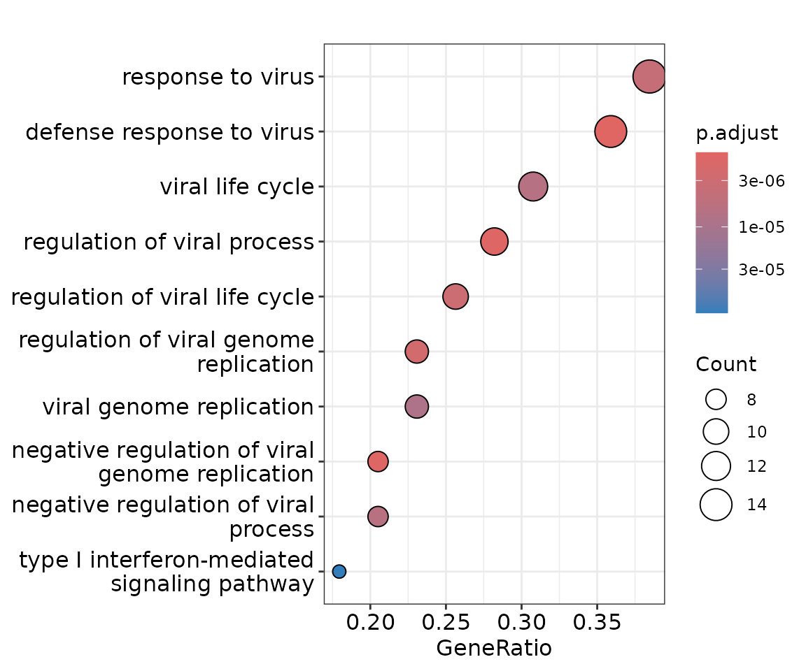
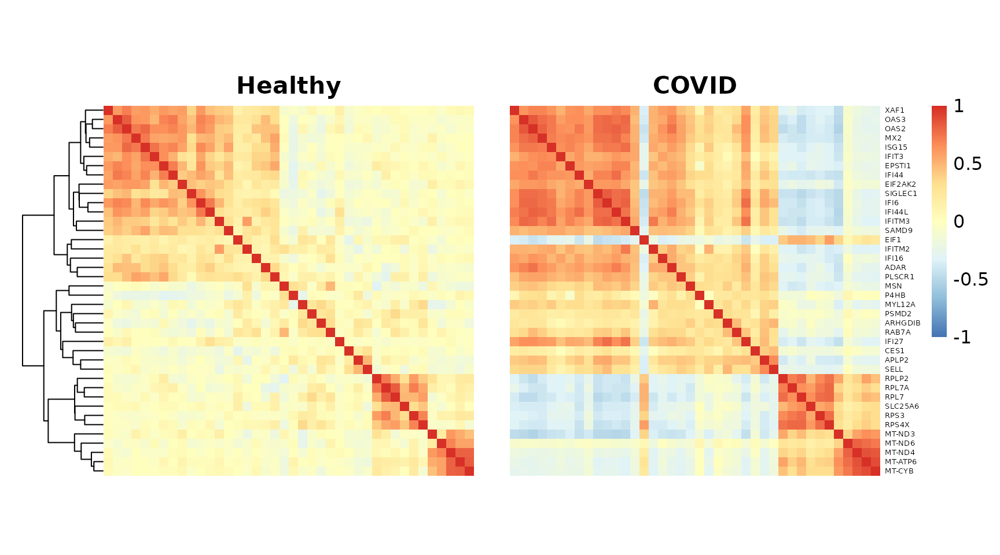
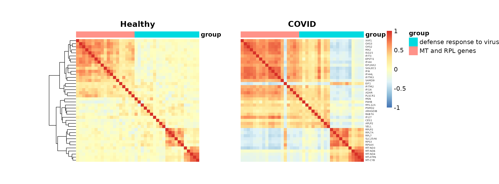

Differential co-expression with CS-CORE
differential_coexpression.RmdBeyond asking which genes are differentially expressed, a complementary question is: do the relationships between genes change across conditions? Two genes may maintain similar expression levels while their coordination is substantially rewired, and such changes can reflect altered regulatory programs that standard differential expression analysis would miss. Differential co-expression analysis provides a network-based approach to study the impact of disease/treatment in cell types.
This vignette demonstrates how to use CS-CORE to identify gene modules whose co-expression change between COVID-19 patients and healthy controls in CD14 Monocytes, illustrating the methodology used to produce Figure 6 of the CS-CORE paper. Using the same dataset as in Getting started, we focus on the top 1000 highly expressed genes and work through the following steps:
Load data: specify the cell type and gene set of interest.
Run differential co-expression analysis with
diff_CSCORE(): estimate co-expression for both groups and obtain the observed difference. We then implement a permutation test that randomly permutes the sample labels to build a null distribution of differences in co-expression estimates, from which \(p\)-values for the observed differences are derived.Extract differentially co-expressed gene modules: apply WGCNA to the significantly differentially co-expressed pairs (BH-adjusted \(p\)-values \(< 0.05\)) to extract gene modules that share similar co-expression changes between groups.
Perform GO enrichment analysis: perform GO enrichment analysis on the differentially co-expressed modules to identify dysregulated biological pathways.
Visualize the differentially co-expressed gene modules: for selected modules of interest, visualize the enriched GO pathways and compare co-expression networks between groups with heatmaps.
1. Load packages and data
# wget https://hosted-matrices-prod.s3-us-west-2.amazonaws.com/Single_cell_atlas_of_peripheral_immune_response_to_SARS_CoV_2_infection-25/blish_covid.seu.rds
pbmc <- readRDS('blish_covid.seu.rds')
pbmc <- UpdateSeuratObject(pbmc) # update the obsolete Seurat object
pbmc_CD14 <- pbmc[, pbmc$cell.type.coarse %in% 'CD14 Monocyte']
mean_exp <- rowMeans(pbmc_CD14@assays$RNA@counts / pbmc_CD14$nCount_RNA)
genes_selected <- names(sort.int(mean_exp, decreasing = TRUE))[1:1000]Instead of subsetting to cells from healthy subjects, here we are interested in the difference in co-expression between CD14 Monocytes from healthy subjects and from COVID-19 patients.
# obtain the disease label for each donor (sample)
Status_id_tab <- table(pbmc_CD14$Donor, pbmc_CD14$Status)
Status_id_tab#> COVID Healthy
#> C1 3419 0
#> C2 217 0
#> C3 1102 0
#> C4 713 0
#> C5 462 0
#> C6 277 0
#> C7 2095 0
#> H1 0 680
#> H2 0 325
#> H3 0 215
#> H4 0 166
#> H5 0 444
#> H6 0 224There are 8285 CD14 Monocytes from 7 COVID-19 patients and 2054 CD14 Monocytes from 6 healthy controls.
2. Run differential co-expression analysis with CS-CORE
We run diff_CSCORE() to estimate co-expression in each
group and perform a permutation test. Permutations are done at the
biological sample (donor) level to preserve within-sample cell
correlations, following the procedure described in the paper. By default,
we run 100 permutations, and you can further increase it for p-values
with higher resolution.
diff_result <- diff_CSCORE(pbmc_CD14,
group_label = 'Status',
sample_label = 'Donor',
genes = genes_selected,
group_levels = c('Healthy', 'COVID'),
n_permu = 100,
seed = 2024,
n_cores = 1) # increase on a multi-core machine#> |========================================| 100%- Note: This step can be time consuming. Each permutation run takes ~20 seconds on a single core (Intel Xeon Gold 6226R, 2.90 GHz), so 100 permutations takes ~33 minutes on a singlecore. We recommend using multiple cores via n_cores to speed up the analysis.
obs_diff <- diff_result$obs_diff
permu_pval <- diff_result$p_value
# BH-adjusted p-values
p_matrix_BH <- matrix(0, length(genes_selected), length(genes_selected))
p_matrix_BH[upper.tri(p_matrix_BH)] <- p.adjust(
permu_pval[upper.tri(permu_pval)], method = "BH")
p_matrix_BH <- p_matrix_BH + t(p_matrix_BH)
# Set non-significant differences to 0
obs_diff_thresholded <- obs_diff
obs_diff_thresholded[p_matrix_BH > 0.05] <- 03. Extract differentially co-expressed gene modules
We apply WGCNA to the thresholded differential co-expression matrix, using the soft-thresholding power set to 1, as described in the paper.
if (!require(WGCNA)) {
install.packages("WGCNA")
library(WGCNA)
} else {
library(WGCNA)
}
# Compute the adjacency matrix based on the differential co-expression matrix
adj <- WGCNA::adjacency.fromSimilarity(abs(obs_diff_thresholded) / 2, power = 1)
# Compute the topological overlap matrix
TOM <- WGCNA::TOMsimilarity(adj)
dissTOM <- 1 - TOM
rownames(dissTOM) <- colnames(dissTOM) <- genes_selected
# Run hierarchical clustering as in the WGCNA workflow
hclust_dist <- hclust(as.dist(dissTOM), method = "average")
memb <- dynamicTreeCut::cutreeDynamic(dendro = hclust_dist,
distM = dissTOM,
deepSplit = 2,
pamRespectsDendro = FALSE,
minClusterSize = 10)
# For more instructions on tuning WGCNA parameters, see
# https://horvath.genetics.ucla.edu/html/CoexpressionNetwork/Rpackages/WGCNA/Tutorials/
names(memb) <- genes_selected
memb_tab <- table(memb)
module_list <- lapply(sort(unique(memb)), function(i_k) names(which(memb == i_k)))4. Perform GO enrichment analysis
We perform GO enrichment analysis on each differentially co-expressed module, using the same approach as in Getting started.
if (!require(clusterProfiler)) {
BiocManager::install("clusterProfiler")
library(clusterProfiler)
} else {
library(clusterProfiler)
}
# Set all genes in the clustering analysis as background
universe <- genes_selected
ego_result <- lapply(1:length(module_list), function(i) {
enrichGO(gene = module_list[[i]],
OrgDb = 'org.Hs.eg.db', # human
keyType = "SYMBOL",
ont = "ALL",
pAdjustMethod = "BH",
universe = universe,
pvalueCutoff = 0.05)
})We focus on modules with the strongest enrichment signals (at least one GO term with BH-adjusted \(p\)-value \(< 10^{-3}\) and at least 10 enriched GO terms) and print the top 3 GO terms per module.
top_enrich_clusters_diff <- which(sapply(ego_result, function(x)
(x@result$p.adjust[1] < 0.001) & (dim(x)[1] > 10)))
top_enrich_go_diff <- lapply(top_enrich_clusters_diff, function(i) ego_result[[i]]@result[1:3, ])#> Loading required namespace: DOSE
#>
for (i in 1:length(top_enrich_go_diff)) {
print(top_enrich_go_diff[[i]][, c('Description', 'GeneRatio', 'p.adjust')])
cat('\n')
}
#> Description GeneRatio p.adjust
#> GO:0002181 cytoplasmic translation 47/66 2.717125e-33
#> GO:0006412 translation 51/66 2.379212e-32
#> GO:0042254 ribosome biogenesis 23/66 8.353813e-15
#>
#> Description GeneRatio
#> GO:0051607 defense response to virus 14/39
#> GO:0045071 negative regulation of viral genome replication 8/39
#> GO:0050792 regulation of viral process 11/39
#> p.adjust
#> GO:0051607 1.445494e-06
#> GO:0045071 1.591431e-06
#> GO:0050792 1.591431e-06
#>
#> Description GeneRatio
#> GO:0001912 positive regulation of leukocyte mediated cytotoxicity 6/29
#> GO:0031343 positive regulation of cell killing 6/29
#> GO:0019883 antigen processing and presentation of endogenous antigen 5/29
#> p.adjust
#> GO:0001912 0.0004419722
#> GO:0031343 0.0004419722
#> GO:0019883 0.0011535340
#>
#> Description GeneRatio
#> GO:0008380 RNA splicing 10/24
#> GO:0006397 mRNA processing 10/24
#> GO:0000375 RNA splicing, via transesterification reactions 9/24
#> p.adjust
#> GO:0008380 4.193478e-05
#> GO:0006397 4.193478e-05
#> GO:0000375 4.193478e-05
#>
#> Description
#> GO:0019886 antigen processing and presentation of exogenous peptide antigen via MHC class II
#> GO:0002495 antigen processing and presentation of peptide antigen via MHC class II
#> GO:0002504 antigen processing and presentation of peptide or polysaccharide antigen via MHC class II
#> GeneRatio p.adjust
#> GO:0019886 6/19 4.134678e-06
#> GO:0002495 6/19 4.134678e-06
#> GO:0002504 6/19 4.134678e-065. Visualize the differentially co-expressed gene modules
For selected modules with significant differential signals, we further visualize the enriched pathways and the difference in co-expression between groups.
for (pkg in c("enrichplot", "pheatmap", "RColorBrewer", "gridExtra")) {
if (!require(pkg, character.only = TRUE)) {
if (pkg == "enrichplot") BiocManager::install(pkg) else install.packages(pkg)
library(pkg, character.only = TRUE)
}
}As an example, we choose a module enriched for defense response to virus to illustrate the visualization of GO pathways and of co-expression networks in Healthy versus COVID patients.
# gene set of interest
gene_set <- module_list[[4]]
# visualize top 10 enriched GO terms
dotplot(ego_result[[4]])
# organize the co-expression estimates for the gene set of interest
# the labels are given by group_levels used in diff_CSCORE()
group_levels <- c('Healthy', 'COVID')
diff_est_example <- list(
Healthy = diff_result$est_group1[gene_set, gene_set],
COVID = diff_result$est_group2[gene_set, gene_set]
)
col_palette <- colorRampPalette(rev(brewer.pal(n = 7, name = "RdYlBu")))(100)
breaks <- seq(-1, 1, length.out = 101)
p_list <- list()
for (i in 1:2) {
p_list[[i]] <- pheatmap(diff_est_example[[group_levels[i]]],
border_color = NA,
color = col_palette, breaks = breaks,
cluster_rows = if (i == 1) TRUE else p_list[[1]]$tree_row,
cluster_cols = if (i == 1) TRUE else p_list[[1]]$tree_col,
show_colnames = F, show_rownames = ifelse(i == 2, T, F),
treeheight_col = 0, treeheight_row = ifelse(i == 1, 50, 0),
cellwidth = 6, cellheight = 6,
fontsize_row = 5, legend = ifelse(i == 1, F, T),
main = group_levels[i],
silent = T, fontsize = 12,
width = 4.5, height = 4)
}
grid.arrange(p_list[[1]][[4]], p_list[[2]][[4]], nrow = 1)
The genes in this module further divide into two subgroups with distinct biological functions: defense response to virus versus ribosomal protein (RPL) and mitochondrial (MT) genes. We can highlight this with an annotation.
annot_df <- data.frame(cutree(p_list[[2]]$tree_row, 2))
colnames(annot_df) <- 'group'
annot_df$group <- factor(annot_df[[1]],
labels = c('defense response to virus', 'MT and RPL genes'),
levels = c(1, 2))
p_list <- list()
for (i in 1:2) {
p_list[[i]] <- pheatmap(diff_est_example[[group_levels[i]]],
border_color = NA,
color = col_palette, breaks = breaks,
cluster_rows = if (i == 1) TRUE else p_list[[1]]$tree_row,
cluster_cols = if (i == 1) TRUE else p_list[[1]]$tree_col,
show_colnames = F, show_rownames = ifelse(i == 2, T, F),
treeheight_col = 0, treeheight_row = ifelse(i == 1, 50, 0),
cellwidth = 6, cellheight = 6,
fontsize_row = 5, legend = ifelse(i == 1, F, T),
main = group_levels[i],
silent = T, fontsize = 12,
width = 4.5, height = 4,
annotation_col = annot_df,
annotation_legend = ifelse(i == 1, F, T))
}
grid.arrange(p_list[[1]][[4]], p_list[[2]][[4]], nrow = 1)
The GO enrichment results and co-expression heatmaps above are generated using the same methodology as Figure 6 of our manuscript. In the paper, differentially co-expressed modules in CD14 Monocytes were enriched for multiple immune response pathways, including virus defense response, which we demonstrate above. The code here also serves as a general template for studying and visualizing differential co-expression results.
- Note: Due to differences in software versions, the exact module
composition and GO
terms may vary slightly across runs, but the key biological signals should be consistently recovered.